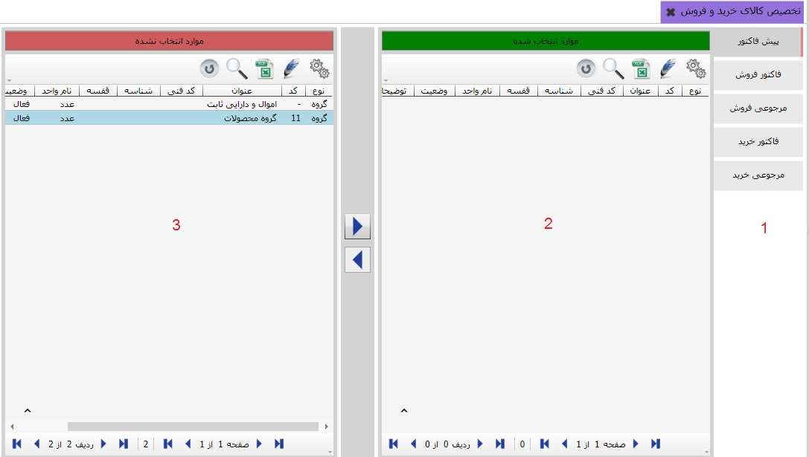

در این قسمت شما می توانید کالاها را به عملیات خرید و فروش اختصاص دهید. در فرم صدور سند خرید و فروش با انتخاب یک عملیات تنها می توانید برای کالاهایی سند صادر کنید که به عملیات مورد نظر تخصیص یافته باشد. توجه داشته باشید که شما هر تعداد کالا که مایل بودید می توانید به یک عملیات اختصاص دهید و هر کالا می تواند به چندین عملیات تخصیص یابد. برای ورود به این قسمت کافی است از سیستم خرید و فروش منوی «تخصیص کالا به عملیات خرید و فروش» را انتخاب کنید.
در تصویر بالا از کادر شماره ی یک عملیات مورد نظر خود را انتخاب کنید، سپس محصولات یا گروه محصولات مورد نظر خود را از کادر شماره ی سه انتخاب و به کادر شماره ی دو انتقال دهید
 توجه داشته باشید که اگر گروه محصولات خود را
انتقال دهید همه ی زیر مجموعه های آن گروه نیز منتقل می شود.
توجه داشته باشید که اگر گروه محصولات خود را
انتقال دهید همه ی زیر مجموعه های آن گروه نیز منتقل می شود.